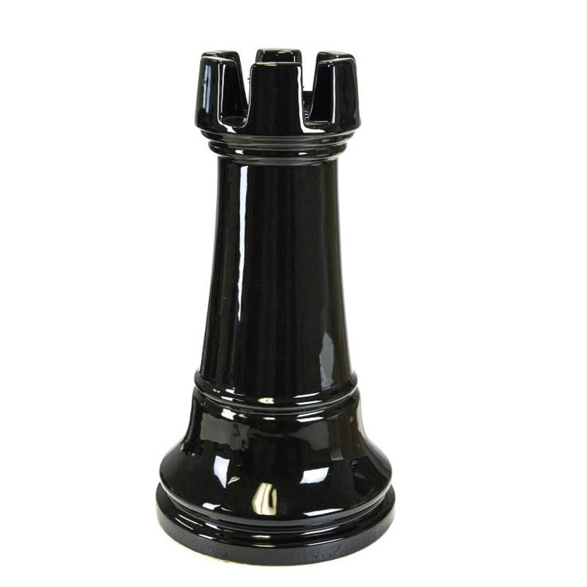

Ладья
Ладья в шахматах ходит по прямым линиям и бьёт фигуры соперника.Ладья может пройти любое расстояние по прямой, пока не встретит препятствие в виде собственной фигуры, вражеской фигуры или края доски.
Если перед ладьей нет препятствий, она может сделать длинный ход, контролируя сразу весь ряд или колонну.
Исключение: ладья участвует в рокировке — специальном ходе, в котором король перемещается на две клетки в сторону ладьи, а она затем перепрыгивает через короля, становясь за ним на соседнюю клетку.
